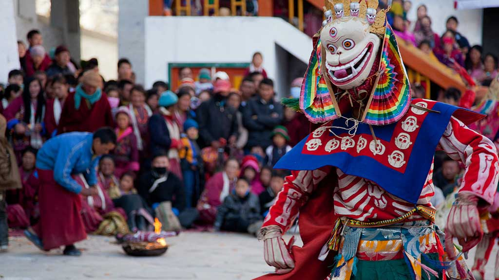

Welcome to Arunanchal Pradesh!

Arunachal Pradesh, located in northeastern India, is celebrated for its breathtaking natural landscapes, rich
cultural diversity, and vibrant traditions. The culture of Arunachal Pradesh is deeply rooted in its indigenous
tribal communities, each with its own distinct customs, languages, and rituals.
The state celebrates a multitude of festivals that showcase its cultural richness and community spirit. Festivals
such as Losar, Ziro Music Festival, and Nyokum are prominent, marked by traditional dances, folk songs, and
rituals that celebrate harvests, ward off evil spirits, and honor local deities.
Arunachal Pradesh's cuisine reflects its tribal heritage and local produce, featuring dishes like Apong (rice
beer), Thukpa (noodle soup), Momos (dumplings), and smoked meats. These dishes highlight the region's agricultural
practices and reliance on natural resources for sustenance.
Music and dance are integral to Arunachal Pradesh's cultural fabric, with folk dances like Aji Lamu, Buiya, and
Popir being performed during festivals and social gatherings. These dances, characterized by colorful attire and
rhythmic movements, preserve tribal narratives and cultural identities.
The state's religious and spiritual practices are centered around Buddhist monasteries, Hindu temples, and
indigenous animistic beliefs. Tawang Monastery, one of the largest monasteries in India, is a significant
pilgrimage site and center of Buddhist learning in the region.
Arunachal Pradesh's natural beauty, including snow-capped mountains, lush valleys, and pristine rivers, provides a
scenic backdrop for cultural exploration and eco-tourism activities. Trekking, birdwatching, and exploring tribal
villages offer travelers opportunities to immerse themselves in local traditions and lifestyles.
The state's handicrafts, such as bamboo and cane products, traditional weavings, and intricate beadwork, showcase
the artistic skills and cultural heritage of its tribal artisans. These crafts play a crucial role in the economic
livelihoods of local communities and contribute to preserving cultural traditions.